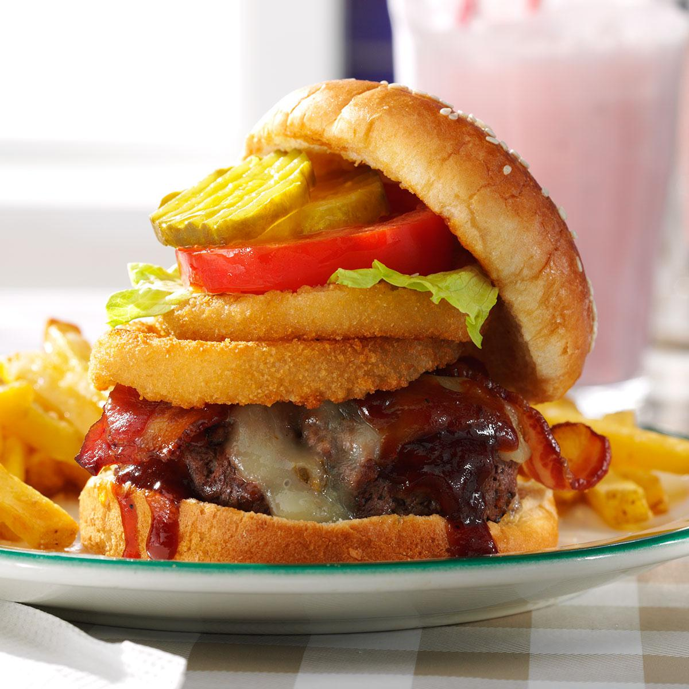

BBQ Bacon Burger

Description
This reciple is an old time Steakhouse favorite, featuring a generous slab of prime angus beef complemented by pickles, onions, crispy bacon and slathered in delicious homestyle BBQ sauce that will make your tastebuds proud to be an American.
Source: https://www.tasteofhome.com/recipes/bbq-bacon-burger/
Ingredients
- 12 frozen onion rings
- 2 pounds ground beef
- 1/4 teaspoon garlic salt
- 1/4 teaspoon pepper
- 6 slices pepper jack cheese
- 6 hamburger buns, split and toasted
- 1 cup barbecue sauce
- 6 cooked bacon strips
- Optional toppings: Lettuce leaves, sliced tomato and dill pickles
Steps
- Bake onion rings according to package directions. Meanwhile, in a large bowl, combine beef, garlic salt and pepper; mix lightly but thoroughly. Shape into six 3/4-in.-thick patties.
- In a large nonstick skillet, cook burgers over medium heat 5-7 minutes on each side or until a thermometer reads 160°, adding cheese during the last minute of cooking. Serve on buns with barbecue sauce, bacon, onion rings and toppings as desired.